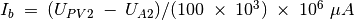
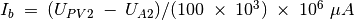

Caractéristique de la sortie (CE) d’un transistor
Objectif
Tracer la courbe caractéristique de sortie d’un transistor. Le
collecteur est connecté à PV1 à travers une résistance de  .
.


Procédure
- Régler la tension de base à 1V et DÉMARRER.
- Recommencer pour diverses valeurs du courant de base.
Discussion
Les courbes caractéristiques pour différentes valeurs du courant de base
sont montrées sur la figure. Le courant de collecteur est obtenu à
partir de la différence de potentiel aux bornes de la résistance de
.
Le courant de la base dépend du réglage de la source de tension à
l’extrémité d’une résistance de  , l’autre extrémité étant
connectée à la base. La valeur du courant de base est calculée par
.
Si A2 n’est pas connectée, le code considère une valeur de 0,6V pour la
base afin de calculer le courant dans celle-ci.
, l’autre extrémité étant
connectée à la base. La valeur du courant de base est calculée par
.
Si A2 n’est pas connectée, le code considère une valeur de 0,6V pour la
base afin de calculer le courant dans celle-ci.